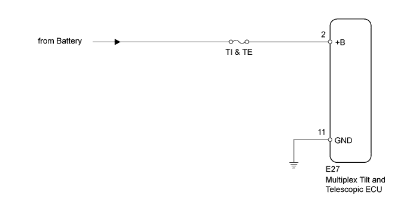
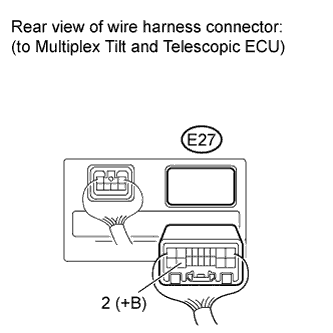
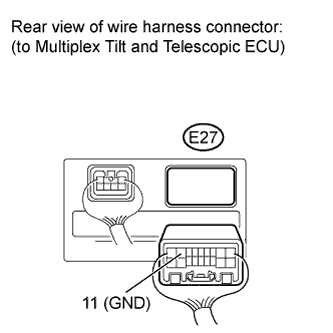

POWER TILT AND POWER TELESCOPIC STEERING COLUMN SYSTEM > Actuator Power Source Circuit |

| 1.INSPECT FUSE (TI & TE) |
Remove the TI & TE fuse from the main body ECU.
Measure the resistance according to the value(s) in the table below.
| Tester Connection | Condition | Specified Condition |
| TI & TE fuse | Always | Below 1 Ω |
|
| ||||
| OK | |
| 2.CHECK HARNESS AND CONNECTOR (MULTIPLEX TILT AND TELESCOPIC ECU - BATTERY) |
 |
Disconnect the E27 multiplex tilt and telescopic ECU connector.
Measure the voltage according to the value(s) in the table below.
| Tester Connection | Condition | Specified Condition |
| E27-2 (+B) - Body ground | Always | 11 to 14 V |
|
| ||||
| OK | |
| 3.CHECK HARNESS AND CONNECTOR (MULTIPLEX TILT AND TELESCOPIC ECU - BODY GROUND) |
 |
Measure the resistance according to the value(s) in the table below.
| Tester Connection | Condition | Specified Condition |
| E27-11 (GND) - Body ground | Always | Below 1 Ω |
|
| ||||
| OK | ||
| ||